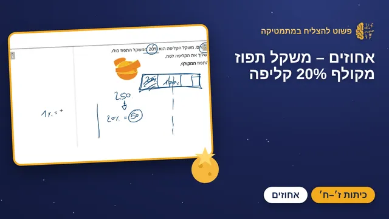
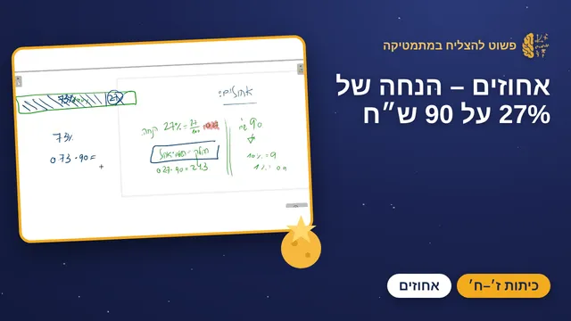
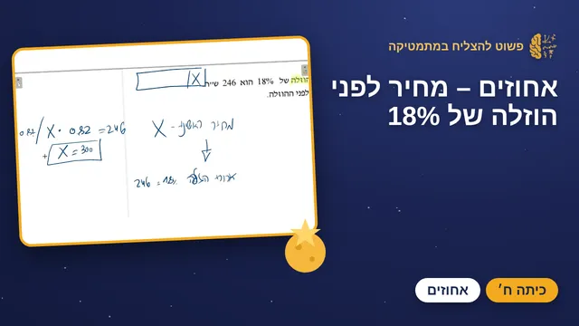
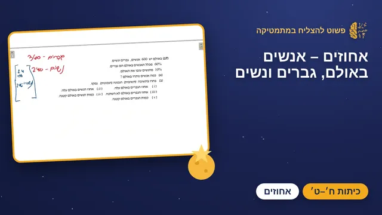
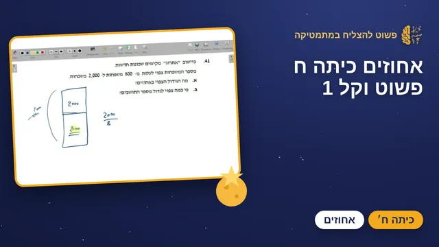

פשוט להצליח במתמטיקה › כל הנושאים › אחוזים
אחוזים – סרטוני הסבר ותרגול
16 סרטוני הסבר ותרגול בנושא אחוזים – לכיתה ז׳, כיתה ח׳, כיתה ט׳, שאלון 371. כל נושא מוסבר מהקל אל הקשה: קודם הרעיון, אחר כך תרגילים, ובסוף שאלות בסגנון בגרות. הכול בחינם, בשיטת "פשוט להצליח".
רוצים לעקוב אחרי ההתקדמות?נרשמים בחינם, וכל סרטון שראיתם מסומן ✓. ממשיכים מכל מכשיר.
הצטרפות בחינם ←אחוזים – כיתה ז׳ כל הנושאים של כיתה ז׳ ←

אחוזים – משקל תפוז מקולף 20% קליפה
אחוזים – הנחה של 27% על 90 ש״ח מבוא לאחוזים – 100%, 10% ו 1%, הנחה והתייקרות
מבוא לאחוזים – 100%, 10% ו 1%, הנחה והתייקרות מבצעים בחנות – לומדים אחוזים · סרטון קצר
מבצעים בחנות – לומדים אחוזים · סרטון קצר אחוזים · סרטון קצר
אחוזים · סרטון קצראחוזים – כיתה ח׳ כל הנושאים של כיתה ח׳ ←

אחוזים – מחיר לפני הוזלה של 18% הוזלה והתייקרות באחוזים – מחיר סופי ואחוז שינוי כולל
הוזלה והתייקרות באחוזים – מחיר סופי ואחוז שינוי כולל
אחוזים – אנשים באולם, גברים ונשיםאחוזים – משקל תפוז מקולף 20% קליפהאחוזים – הנחה של 27% על 90 ש״חמבוא לאחוזים – 100%, 10% ו 1%, הנחה והתייקרות אחוזים כיתה ח פשוט וקל 3
אחוזים כיתה ח פשוט וקל 3 אחוזים כיתה ח פשוט וקל 2
אחוזים כיתה ח פשוט וקל 2
אחוזים כיתה ח פשוט וקל 1 בעיות אחוזים מהקל אל הקשה – איך לעבוד נכון עם אחוזים 5בעיות אחוזים מהקל אל הקשה – איך לעבוד נכון עם אחוזים 4
בעיות אחוזים מהקל אל הקשה – איך לעבוד נכון עם אחוזים 5בעיות אחוזים מהקל אל הקשה – איך לעבוד נכון עם אחוזים 4 בעיות אחוזים מהקל אל הקשה – איך לעבוד נכון עם אחוזים 3
בעיות אחוזים מהקל אל הקשה – איך לעבוד נכון עם אחוזים 3 בעיות אחוזים מהקל אל הקשה – איך לעבוד נכון עם אחוזים 1
בעיות אחוזים מהקל אל הקשה – איך לעבוד נכון עם אחוזים 1 בעיות אחוזים מהקל אל הקשה – איך לעבוד נכון עם אחוזים 2מבצעים בחנות – לומדים אחוזים · סרטון קצראחוזים · סרטון קצר
בעיות אחוזים מהקל אל הקשה – איך לעבוד נכון עם אחוזים 2מבצעים בחנות – לומדים אחוזים · סרטון קצראחוזים · סרטון קצראחוזים – כיתה ט׳ כל הנושאים של כיתה ט׳ ←
אחוזים – שאלון 371 כל הנושאים של שאלון 371 ←
בעיות אחוזים מהקל אל הקשה – איך לעבוד נכון עם אחוזים 5בעיות אחוזים מהקל אל הקשה – איך לעבוד נכון עם אחוזים 4בעיות אחוזים מהקל אל הקשה – איך לעבוד נכון עם אחוזים 3בעיות אחוזים מהקל אל הקשה – איך לעבוד נכון עם אחוזים 1בעיות אחוזים מהקל אל הקשה – איך לעבוד נכון עם אחוזים 2